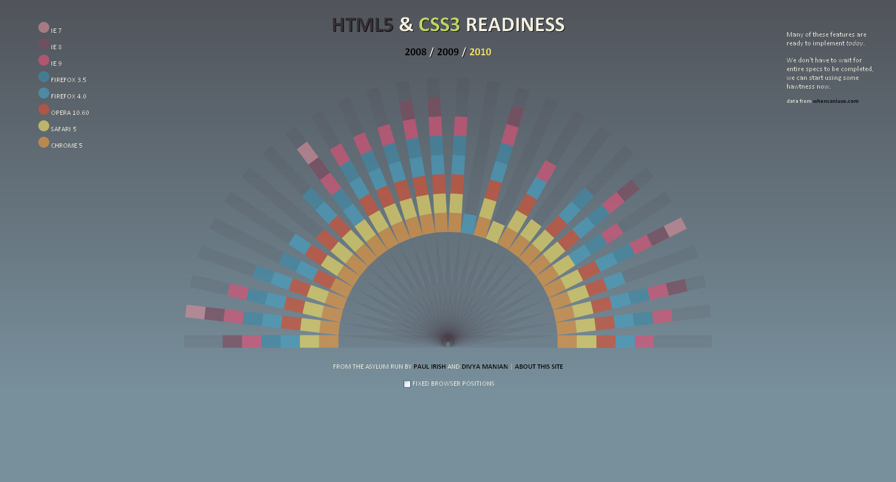
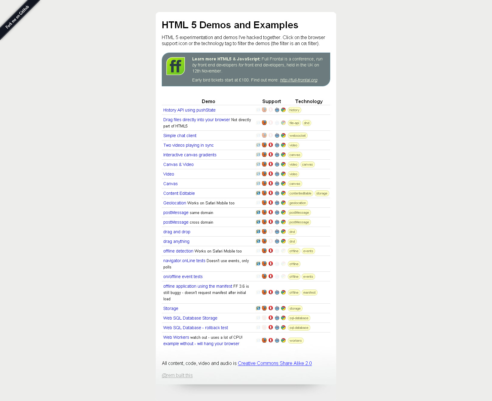

The Birth of HTML 5
HTML was developed by the W3C until 2004, when members of the HTML working group grew disturbed with the direction the W3C was going with HTML. They felt that the W3C was not paying enough attention to the real-world development needs of the language and focusing too much on XML and XHTML. So they formed a new group called WHATWG (Web Hypertext Application Technology Working Group) devoted to evolving the Web. They started by working on a new specification of HTML - HTML 5.
Browser Compatibility
HTML 5 is the newest specification for HTML, and many browsers are going to start supporting it in the future. At this point in time, there is not a lot of support for HTML 5, but that support is growing all the time.One nice thing about HTML 5 is that it attempts to stay backwards compatible.
 My Impressions.....
My impressions of HTML 5 so far are that the new tags: < header > , < nav > , < section > ,
< aside > , < article > , and < footer > will be good for visualising display layout from code layout, and make working from other developers code easier. These more defined content tags should also help spiders and search engines evaluate site content.

< audio > and < video > tags have been long over due, and should make adding multimedia to websites a breeze, though these features could very easily be abused, making for a whole new generation of terrible websites!
the addition of < canvas > for drawing graphics with script , < drag and drop > for .... dragging and dropping content, and other Java api (application programming interfaces) support look to make HTML 5 a very powerful tool for simple dynamic website development, and is an excellent upgrade to HTML 4 , even if it did take 13 years between chapters.